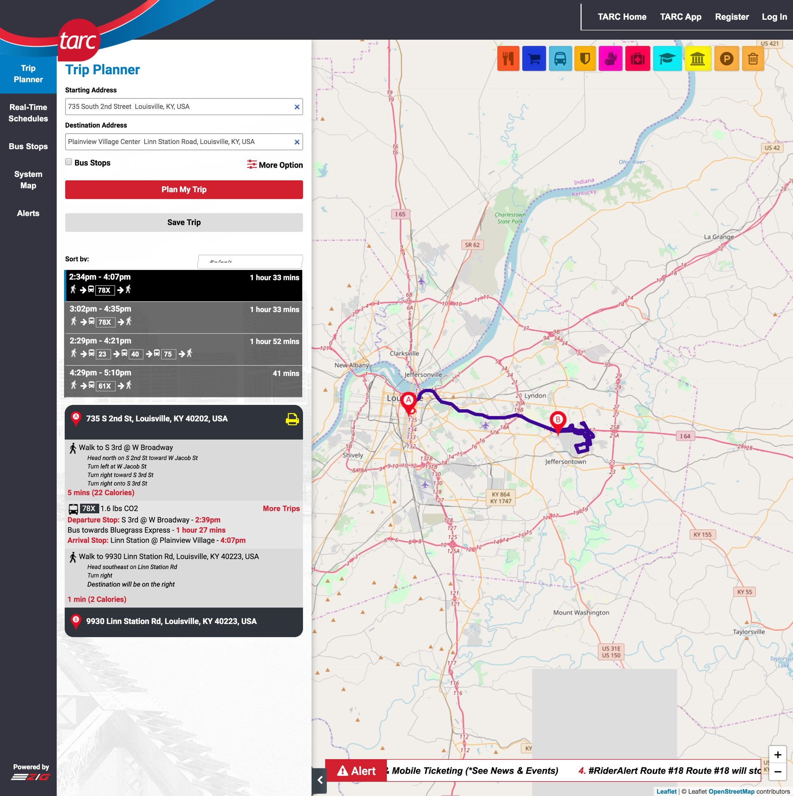
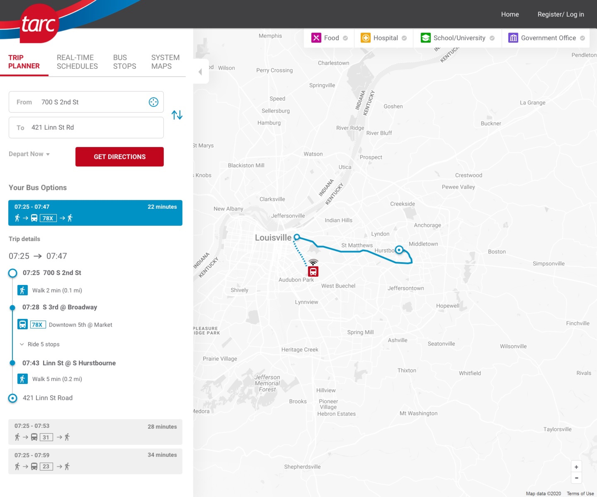

The Transit Authority of River City (TARC) is the major public transportation provider for Louisville, Kentucky. TARC operates a fleet of 277 accessible buses, including numerous hybrids and I must have ridden 80% of those buses. That’s how much I use these buses for my transport, almost daily.
It gives me immense satisfaction as a designer to redesign a page that I use almost every day. It also allows me to lay out my approach to redesign a project.
This app is used by thousands of people just like me every day in the city of Louisville. Changing the interface drastically without targeting any of the pain points might annoy the user.
I like to innovate on top of the existing design unless I know for sure that the existing design is going to provide zero value to the user from all perspectives.
Existing design

Challenges
Although I did not have any statistics or a list of problems with the interface, it made sense for me to target the low hanging fruit, which is the UI of the page. By looking at the above design it was clear to me that there’s an opportunity to modernize the look and feel of the page without changing the layout or functionalities on the page that would annoy the users.
Proposed design

1. Current UI design style I took some time to go over through the various elements in the page such as tabs, input fields, buttons, icons, typography, etc. and attempted adding elements with current trends of UI design like rounded rectangles, drop shadows, binary color theme.
2. Menu options The menu options Trip Planner, Real-time schedules, etc. take up a lot of horizontal space in the existing design. You can also see that most of the space below in the menu bar is empty. To use the space efficiently, I displayed the menu options as tabs.
3. Input fields The ‘From’ input field has the option to populate the Current location of the user by just a click on the icon.
4. Greyscaled map When you look at the map, it looks like there’s too much happening on it. In the proposed design, you can notice that the map is greyscaled and the focus is on the selected bus route.
5. Common locations The commonly chosen locations nearby such as Schools, Universities, Food places, Government offices, etc. have well-defined checkmarks for the users to select, unlike the existing design.